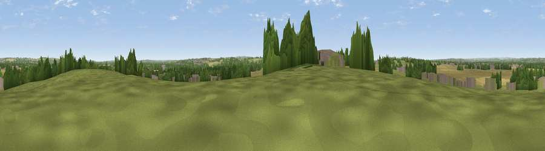

Aston Hill
#23732 in England · top 33% of its area beats it · near Aston-on-TrentThe view, rendered

A 360° render of this exact spot computed from the terrain model, tree cover and land cover — summer colours, afternoon light, calibrated against photographs of famous viewpoints. Real trees, hedges and buildings will differ in detail.
The panorama
Grey silhouette: terrain skyline in each direction (720 bearings, Earth curvature and refraction included). Dashed green: skyline with trees (+15 m) and buildings (+8 m) as obstacles. Blue strip: how far the ground is visible on each bearing.
Where the view opens
Wedge length = distance to the farthest visible ground on that bearing (vegetation-aware). Rings at 10, 25 and 50 km.
What fills the view
36% cropland · 33% grassland · 21% woodland · 10% built-up ·
Angular shares of the visible panorama (visual magnitude), not map area. Landscape diversity 0.58 (0–1 Shannon).
Key numbers
More beautiful places nearby
The staircase of upgrades: each row has a higher view potential than everything closer. Driving times are estimates from straight-line distance, calibrated against real road routing — check an actual route before setting out.
| Place | Direction | Drive | Score |
|---|---|---|---|
| Viewpoint near Weston-on-Trent | SSE · 3 km | ~7 min | 49.8 |
| Viewpoint near Weston-on-Trent | S · 4 km | ~8 min | 54.2 |
| Breedon Hill | S · 7 km | ~14 min | 57.9 |
| No Man's Lane | NE · 9 km | ~18 min | 65.8 |
| Viewpoint near Whitwick | SSE · 14 km | ~25 min | 71.2 |
| Ives Head | SSE · 15 km | ~27 min | 73.3 |
| Viewpoint near Stanton under Bardon | SSE · 18 km | ~31 min | 76.0 |
| Viewpoint near Woodhouse Eaves | SSE · 18 km | ~32 min | 77.7 |
52.86613, -1.39636 · source: osm peak · position refined by local search. Computed location — check access rights before visiting.